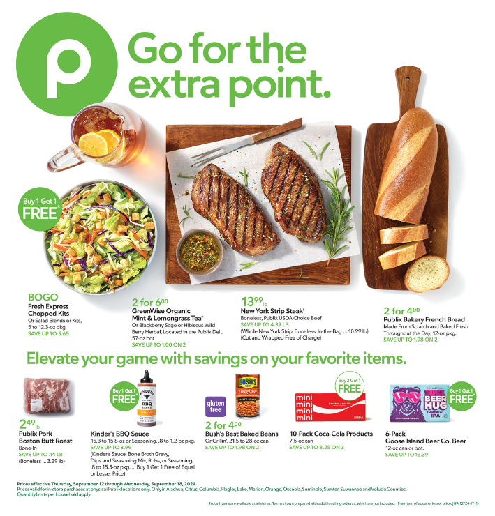
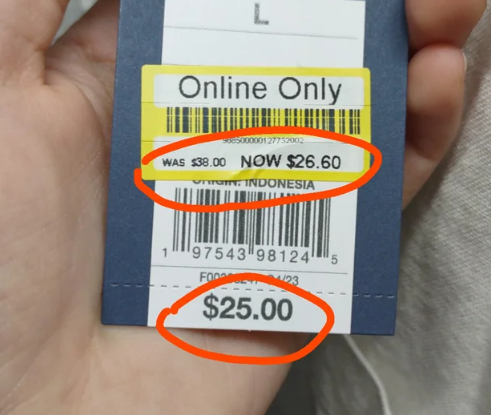
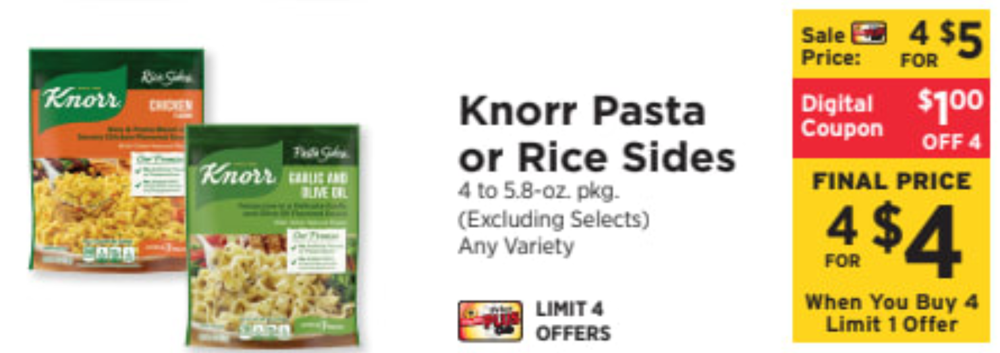

The Hidden Strategies of Grocery Store Weekly Flyers
By Jacob Lamp
As a former cashier and frequent food shopper, I have some experience with grocery store sales. I work at a grocery store called ShopRite, which is local to the Northeast where I am from. I will be explaining some strategies hidden within grocery store sales.
1. Judging by the Cover
You have probably been told the common phrase, "Don't judge a book by its cover," but that's exactly what you should do when reading a grocery store flyer. The best deals are likely to be placed on the front page in order to grab the attention of a customer. This is in the hopes that they will continue looking through the rest of the deals. Below is an example of the front page of the current Publix weekly flyer:
I notice that these front page items tend to have some variety, which helps to maximize the targeted audience of customers. They also seem to be items that are commonly purchased, and this helps to attract attention from the most common group of customers. In comparison to other grocery stores, the Publix weekly flyer is unique in terms of how the images of food are layed out. Some of the food is laid out in the form of a complete meal, with the names of items listed nearby. This goes against common design, and I believe this creativity may even be noticed by the customers.
2. It's Not All Sales
While the weekly fliers can contain some good prices, it's important to make your own judgement to determine which items are worth their price. Grocery stores can include items in these flyers that haven't actually been marked down. They hope that customers will subconsciously assume the prices in the flyer are all good deals. They can also change prices to create the illusion of a good price. I have noticed an example of this when one of my frequently purchased items increased in price for one week, but then went on sale the next week. This creates the illusion of a larger amount of savings. Here is an example below:
3. Jumping over Hurdles
From my time working as a cashier, I have noticed a potential business strategy at play behind the scenes. Imagine this: You are an elderly shopper who isn't familiar with technology. In the weekly flyer you see the following sale:
You take four of these items and eventually go through checkout with a full order. After using your store card the items come out to be 4 for 5$, but it goes unnoticed. This is because the 4 for 4$ sale was actually a digital coupon, and you would have needed to claim it on the store app. I have seen this situation happen many times with digital coupons, and I suspect that coupon rules are made to be purposely confusing to prevent too many people from taking advantage of the sale. This is a power dynamic that involves grocery stores using confusion to their benefit. On a positive note, this should allow grocery stores to offer better sales, because the sales are being used by less people. Of course, this tactic is not used at all grocery stores. Aldi is a good example of a store that minimizes sale confusion, as they have no membership system. This means that sales are given to anybody.